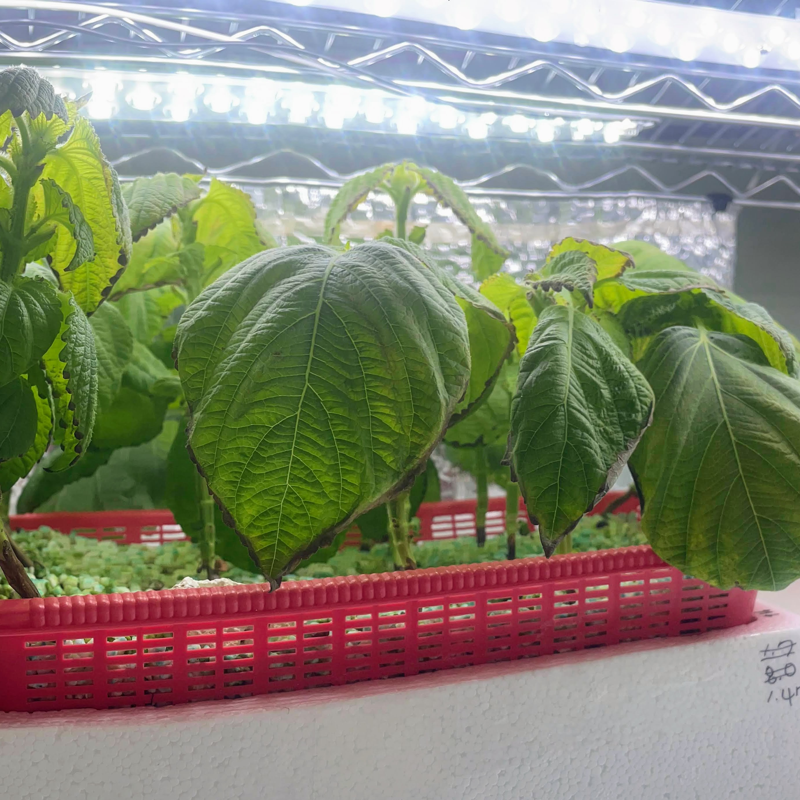

Making Water
Plundered from
- Growing Direct-Seeded Watercress by Two Non-circulating Hydroponic Methods
- 농진청 수경재배 가이드라인, 잎들깨 수경재배 가이드라인
- A Guide to Home Hydroponics for Leafy Greens: Cornell CEA
- Effects of Hydrogen Peroxide on Organically Fertilized Hydroponic Lettuce
- Testing the Effect of High pH and Low Nutrient Concentrationon Four Leafy Vegetables in Hydroponics
Roots of hydroponic plants are exposured to nutrient water mostly without any buffers. We already heard of that high EC is uniformly detrimental and hard to revert than its opposite.
That's especially so when you're using sponges. It takes several hours to see the latest effect.


Most plants has wide EC acceptance (~2.5). There's an exception like a broccoli and strawberry. Those are picky.
You can use any water soluble, NPK plus micronutrients fertilizer blends. Hydroponics-only blends are always available in separated stock solutions or powders. Solution products are expansive than powder products.
Prepare rubber gloves, separated cups, buckets or containers for each mix. Mixing diretly rather than diluting, broth A and B causes precious Ca ions to be participated out. This is irreversible loss.
Do not mix any blend products. You'll see immediate insolubillization. If needed, add a non-blended water-soluble chemical (e.g. K2SO4) diluted in water.
According to the Kratky's article, and practically, a .264ml addition of both A and B broth to total 1 liter of water increases EC by .1. You can prepare nutrient water without an EC meter for a known volume of tank, from tap water.

I'm using Masterblend lettuce similar to Chem-Gro lettuce, and completely fits to that guide. I'm sure this applies to any hydroponics blends.
Do not mind pH for preparing the tank water. Initial pH always goes to <6.6 range with a proper fertilizer blending.
There's no consistent result that initial pH out of the appropriate pH 6.0 plus or minus is good for yield or growth.
You can use phosporous acid, sulfuric acid, nitric acid, for NaOH for adjusting pH if the water is out of the appropriate range. I have concentrated acids but didn't used yet.
There're contradictory results for using H2O2. This can be used as a sanitizer and DO generator. While clearly increases DO for a time, some articles suggest that it's detrimental to a root without reducing algae.

In a fact, DO cannot be remain higher than a nominal value of the water unless a temperature goes down. You don't have to do any explict water treatments (sanitization for tap water, H2O2, aeration) without a observed status, or value. If such had worked, it would have been in the guidelines, but it wasn't.